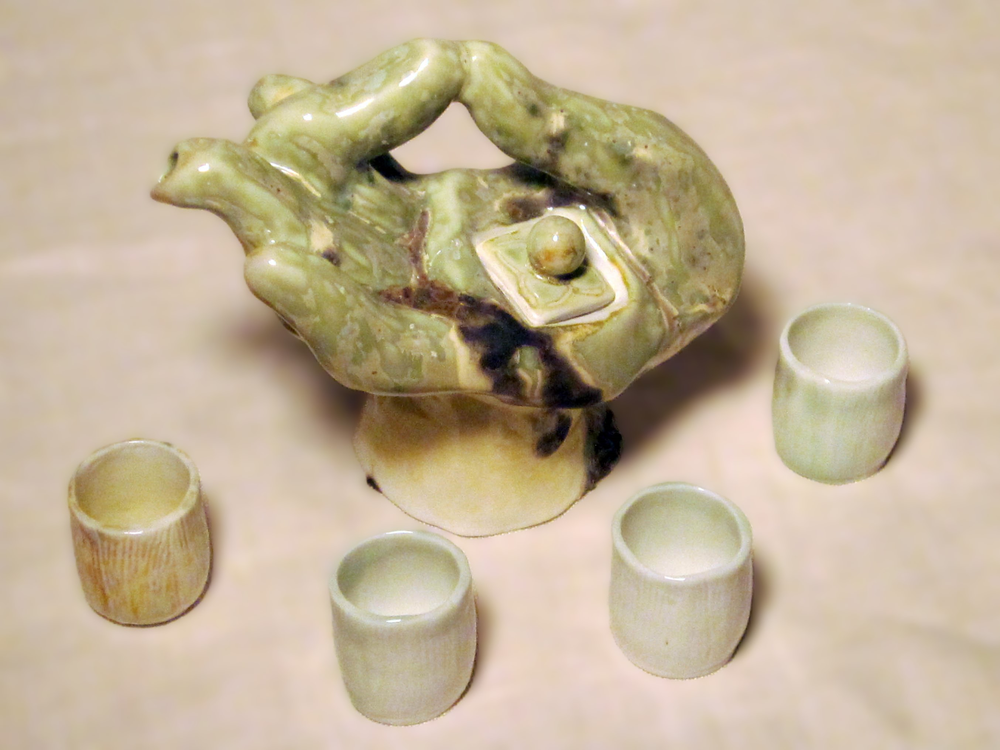
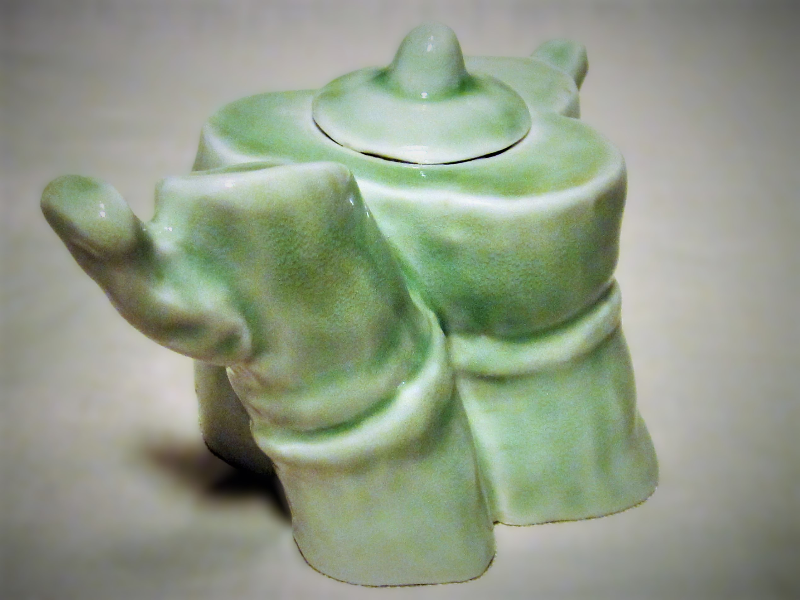
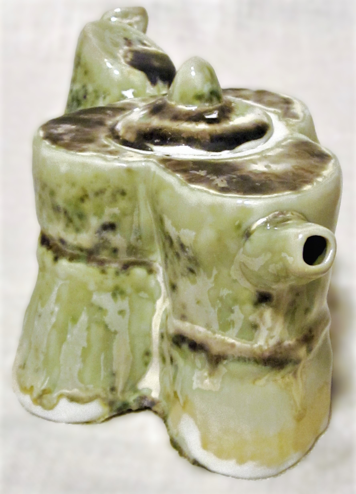

The Gyan Mudra That Serves Tea (And Serenity)
Four porcelain teapots—each shaped like a hand curled in Gyan mudra, the ancient "seal of knowledge"—whisper promises of calm with every tilt. This thumb-to-index fingertip union isn’t just a handle;

it’s an anxiety exorcist, a tension sieve, a bedtime lullaby cast in ceramic. One pot wears jade glaze with caramel cracks, its surface like a Zen garden frozen mid-rake.
Vessels for liquid peace.
Tradition claims this mudra grounds the mind— so why not steep your chamomile in enlightenment?

Ceramic Bamboo: When Noble Stalks Teach You to Bend Without Breaking
The bamboo-bodied teapot stands like one of the Four Gentlemen. A resilient scholar humming with quiet virtue. In Confucian tradition, bamboo embodies resilience; in your hands, it becomes resilience you can pour.
Each jointed curve remembers: how to sway in storms without snapping, how to hollow itself to hold wisdom. The celadon-glazed one wears its cracks like scholar’s ink strokes—flaws transformed to flourish.
The Alchemy of ‘Almost’ Identical
How to Clone Your Art (Without Losing Its Soul)? Here’s the trick: sculpt one original, then let Jingdezhen’s artisans dissect it like surgeons. Mold-makers, casters, glaze wizards—each adds their DNA. The result? Editions, not copies. Like jazz standards: same notes, infinite riffs. Your teapot might wear celadon; mine drips midnight blue. Both are only children.

Art's Dirty Little Secret: How ‘Handmade’ is a Team Sport
We fetishize the lone genius—but these pots confess: art’s a relay race. Your hands shaped the prototype; their hands built the mold. Your eye chose the glaze; their kiln gods decided the final blush. It’s not cheating—it’s time-traveling collaboration. 18th-century craftsmanship meets 21st-century hustle.

Drinkable Duchamp: Functional? Decorative?
Why Choose? Call it cheating if you must— but then what of Michelangelo’s workshop assistants roughing out David’s marble limbs? Or Rubens’ apprentices painting the seventeenth pearl on a Medici gown? Every masterpiece has always been a chorus.
The real question is: does it sing?

Richard Diaz
Every artwork is a delicious trio: the subject (what’s in it?), the form (how’s it made?), and the content (why’s it here?). Peel back these layers, and voilà—hidden meanings and deeper magic reveal themselves! Ready to play art detective? 🔍🎨